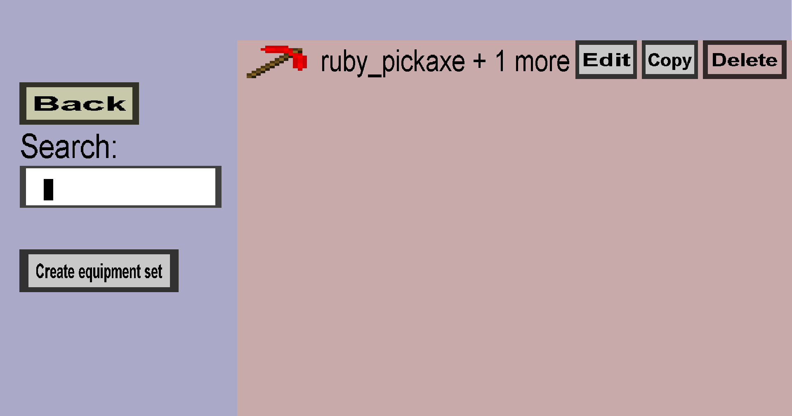

The equipment set overview shows all your equipment sets. An equipment set is a collection of
related equipment (for instance custom ruby helmet, chestplate, leggings, and boots). You can configure
bonuses (for instance extra armor or health) when a player (or mob) equips multiple pieces of the
equipment set (for instance both a ruby chestplate and helmet). This menu should look like this:

There are 3 elements on the left of this menu:
- The Back button, which takes you back to the item overview.
-
The Search field, which filters out equipment sets whose description does not contain the
text within the search field. This is useful if you have lots of equipment sets.
-
The Create equipment set will take you to the equipment set edit menu,
where you can create a new equipment set.
Furthermore, there are 3 buttons for each equipment set you have made:
-
The Edit button will take you to the equipment set edit menu,
where you can edit the corresponding equipment set.
- The Copy button will (instantly) copy the corresponding equipment set.
- The Delete button will (instantly) delete the corresponding equipment set.